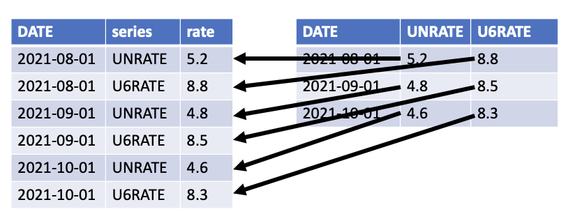
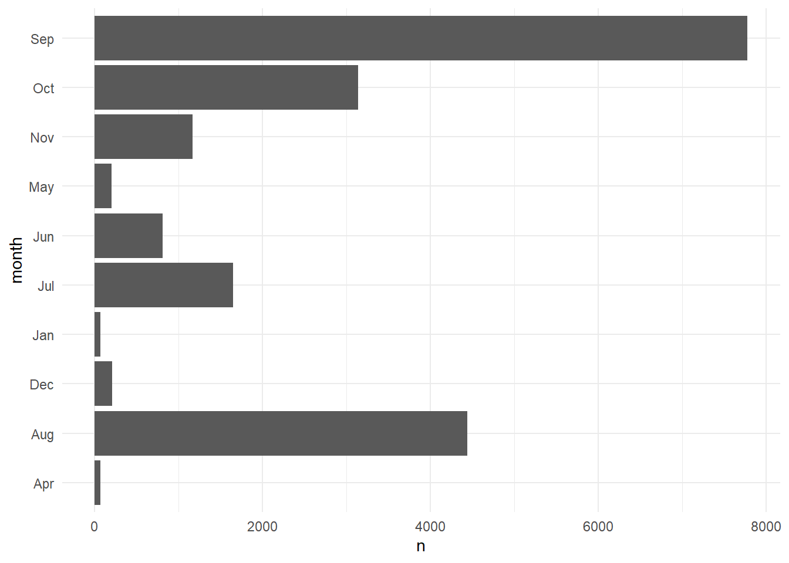
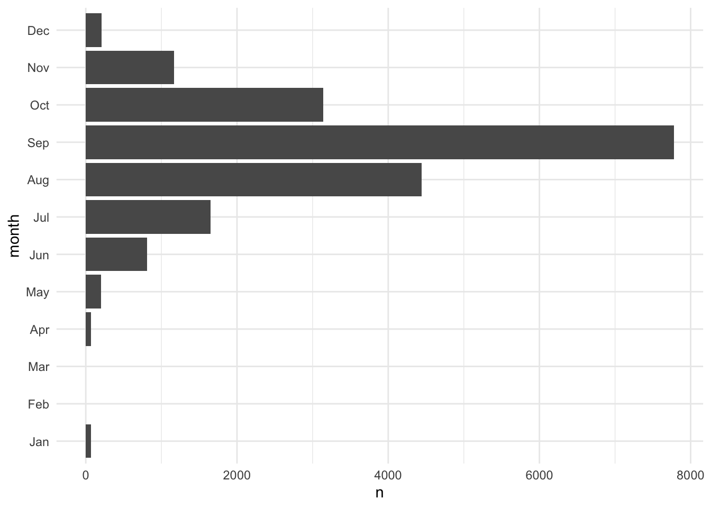
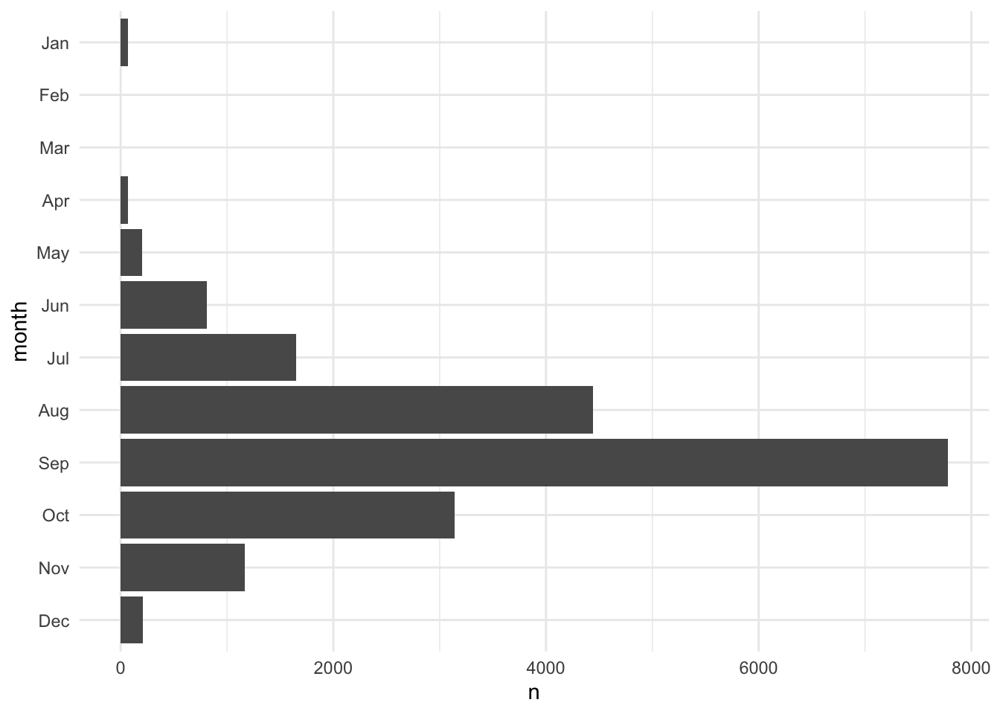
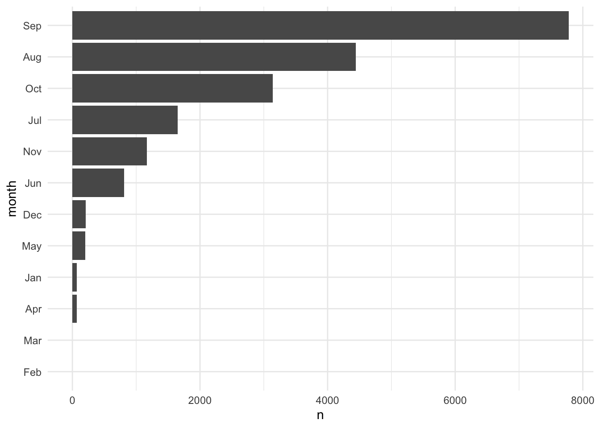
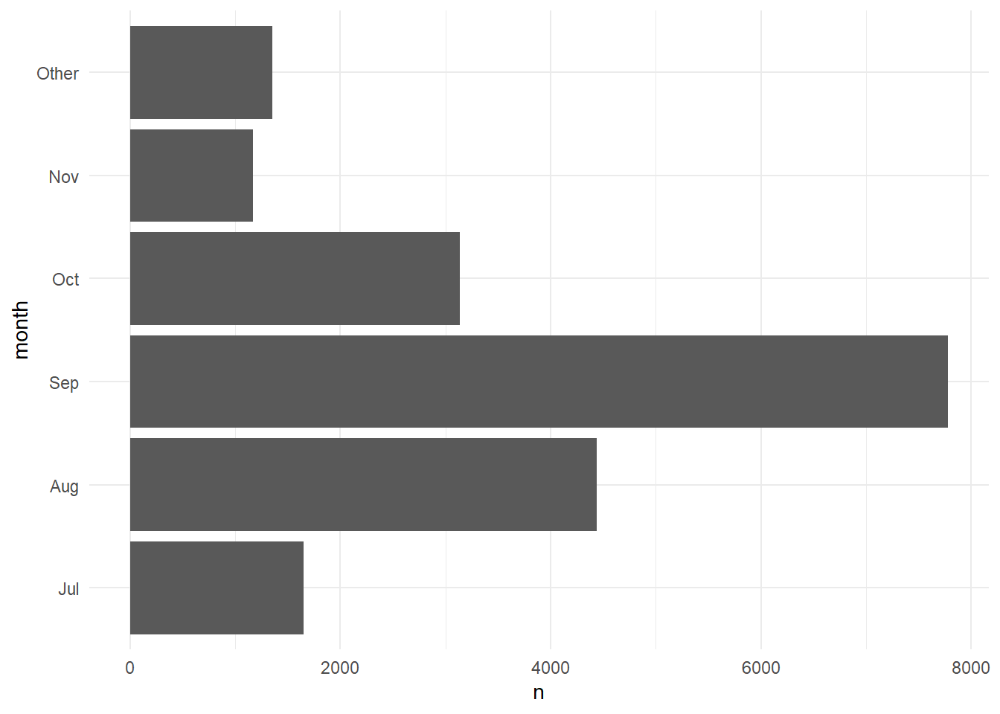

here() starts at /Users/gabemorrison/Documents/Github/data-science-for-public-policy21 Advanced Data Cleaning
Abstract
This section covers advanced techniques for cleaning and manipulating data.
1.1 Review
R for Data Science (2e) displays the first steps of the data science process as “Import”, “Tidy”, and “Transform”. DSPP1 introduced important techniques for importing data like read_csv() and querying web APIs, for tidying data like pivot_longer(), and for transforming data like mutate().
1.2 Import
1.2.1 library(here)
Developing Quarto documents in subdirectories is a pain. When interactively running code in the console, file paths are read as if the .qmd file is in the same folder as the .Rproj. When clicking render, paths are treated as if they are in the subdirectory where the .qmd file is.
library(here) resolves headaches around file referencing in project-oriented workflows.
Loading library(here) will print your working directory.
After this, here() will use reasonable heuristics to find project files using relative file paths. When placing Quarto documents in a directory below the top-level directory, use here() and treat each folder and file as a different string.
Before
After
1.2.2 library(readxl)
We will focus on reading data from Excel workbooks. Excel is a bad tool with bad design that has led to many analytical errors. Unfortunately, it’s a dominant tool for storing data and often enters the data science workflow.
library(readxl) is the premier package for reading data from .xls and .xlsx files. read_excel(), which works like read_csv(), loads data from .xls and .xlsx files. Consider data from the Urban Institute’s Debt in America feature accessed through the Urban Institute Data Catalog.
# A tibble: 51 × 28
fips state_name state Share with Any Debt …¹ Share with Any Debt …²
<chr> <chr> <chr> <chr> <chr>
1 01 Alabama AL .3372881 .5016544
2 02 Alaska AK .1672429 .221573
3 04 Arizona AZ .2666938 .3900013
4 05 Arkansas AR .3465793 .5426918
5 06 California CA .2087713 .2462195
6 08 Colorado CO .213803 .3554938
7 09 Connecticut CT .2194708 .3829038
8 10 Delaware DE .2866829 .469117
9 11 District of Columb… DC .2232908 .3485817
10 12 Florida FL .2893825 .3439322
# ℹ 41 more rows
# ℹ abbreviated names: ¹`Share with Any Debt in Collections, All`,
# ²`Share with Any Debt in Collections, Communities of Color`
# ℹ 23 more variables:
# `Share with Any Debt in Collections, Majority White Communities` <chr>,
# `Median Debt in Collections, All` <chr>,
# `Median Debt in Collections, Communities of Color` <chr>, …read_excel() has several useful arguments:
sheetselects the sheet to read.rangeselects the cells to read and can use Excel-style ranges like “C34:D50”.skipskips the selected number of rows.n_maxselects the maximum number of rows to read.
Excel encourages bad habits and untidy data, so these arguments are useful for extracting data from messy Excel workbooks.
readxl_example() contains a perfect example. The workbook contains two sheets, which we can see with excel_sheets().
As is common with many Excel workbooks, the second sheet contains a second row of column names with parenthetical comments about each column.1
# A tibble: 2 × 4
name species death weight
<chr> <chr> <chr> <chr>
1 (at birth) (office supply type) (date is approximate) (in grams)
2 Clippy paperclip 39083 0.9 This vignette suggests a simple solution to this problem.
# extract the column names
col_names <- readxl_example("clippy.xlsx") |>
read_excel(sheet = "two-row-header", n_max = 0) |>
names()
# load the data and add the column names
readxl_example("clippy.xlsx") |>
read_excel(
sheet = "two-row-header",
skip = 2,
col_names = col_names
)# A tibble: 1 × 4
name species death weight
<chr> <chr> <dttm> <dbl>
1 Clippy paperclip 2007-01-01 00:00:00 0.9library(tidyxl) contains tools for working with messy Excel workbooks, library(openxlsx) contains tools for creating Excel workbooks with R, and library(googlesheets4) contains tools for working with Google Sheets.
1.3 Tidy
The defining opinion of the tidyverse is its wholehearted adoption of tidy data. Tidy data has three features:
- Each variable forms a column.
- Each observation forms a row.
- Each type of observational unit forms a dataframe.
Tidy datasets are all alike, but every messy dataset is messy in its own way. ~ Hadley Wickham
library(tidyr) is the main package for tidying untidy data. We’ll practice some skills using examples from three workbooks from the IRS SOI.
pivot_longer() is commonly used for tidying data and for making data longer for library(ggplot2). pivot_longer() reorients data so that key-value pairs expressed as column name-column value are column value-column value in adjacent columns. pivot_longer() has three essential arguments:
colsis a vector of columns to pivot (or not pivot).names_tois a string for the name of the column where the old column names will go (i.e. “series” in the figure).values_tois a string for the name of the column where the values will go (i.e. “rate” in the figure).

pivot_wider() is the inverse of pivot_longer().
Tidying Example 1
Why aren’t the data tidy?
table1 <- tribble(
~state, ~agi2006, ~agi2016, ~agi2020,
"Alabama", 95067, 114510, 138244,
"Alaska", 17458, 23645, 26445,
"Arizona", 146307, 181691, 245258
)
table1# A tibble: 3 × 4
state agi2006 agi2016 agi2020
<chr> <dbl> <dbl> <dbl>
1 Alabama 95067 114510 138244
2 Alaska 17458 23645 26445
3 Arizona 146307 181691 245258Year is a variable. This data is untidy because year is included in the column names.
table1 <- tribble(
~state, ~agi2006, ~agi2016, ~agi2020,
"Alabama", 95067, 114510, 138244,
"Alaska", 17458, 23645, 26445,
"Arizona", 146307, 181691, 245258
)
table1# A tibble: 3 × 4
state agi2006 agi2016 agi2020
<chr> <dbl> <dbl> <dbl>
1 Alabama 95067 114510 138244
2 Alaska 17458 23645 26445
3 Arizona 146307 181691 245258# A tibble: 9 × 3
state year agi
<chr> <chr> <dbl>
1 Alabama agi2006 95067
2 Alabama agi2016 114510
3 Alabama agi2020 138244
4 Alaska agi2006 17458
5 Alaska agi2016 23645
6 Alaska agi2020 26445
7 Arizona agi2006 146307
8 Arizona agi2016 181691
9 Arizona agi2020 245258The year column isn’t useful yet. We’ll fix that later.
library(tidyr) contains several functions to split values into multiple cells.
separate_wider_delim()separates a value based on a delimeter and creates wider data.separate_wider_position()separates a value based on position and creates wider data.separate_longer_delim()separates a value based on a delimeter and creates longer data.separate_longer_position()separates a value based on position and creates longer data.
Tidying Example 2
Why aren’t the data tidy?
table2 <- tribble(
~state, ~`agi2006|2016|2020`,
"Alabama", "95067|114510|138244",
"Alaska", "17458|23645|26445",
"Arizona", "146307|181691|245258"
)
table2# A tibble: 3 × 2
state `agi2006|2016|2020`
<chr> <chr>
1 Alabama 95067|114510|138244
2 Alaska 17458|23645|26445
3 Arizona 146307|181691|245258The values for 2006, 2016, and 2020 are all squished into one cell.
table2 <- tribble(
~state, ~`agi2006|2016|2020`,
"Alabama", "95067|114510|138244",
"Alaska", "17458|23645|26445",
"Arizona", "146307|181691|245258"
)
table2# A tibble: 3 × 2
state `agi2006|2016|2020`
<chr> <chr>
1 Alabama 95067|114510|138244
2 Alaska 17458|23645|26445
3 Arizona 146307|181691|245258separate_wider_delim(
data = table2,
cols = `agi2006|2016|2020`,
delim = "|",
names = c("2006", "2016", "2020")
) |>
pivot_longer(
cols = -state,
names_to = "year",
values_to = "agi"
)# A tibble: 9 × 3
state year agi
<chr> <chr> <chr>
1 Alabama 2006 95067
2 Alabama 2016 114510
3 Alabama 2020 138244
4 Alaska 2006 17458
5 Alaska 2016 23645
6 Alaska 2020 26445
7 Arizona 2006 146307
8 Arizona 2016 181691
9 Arizona 2020 245258bind_rows() combines data frames by stacking the rows.
one <- tribble(
~id, ~var,
"1", 3.14,
"2", 3.15,
)
two <- tribble(
~id, ~var,
"3", 3.16,
"4", 3.17,
)
bind_rows(one, two)# A tibble: 4 × 2
id var
<chr> <dbl>
1 1 3.14
2 2 3.15
3 3 3.16
4 4 3.17bind_cols() combines data frames by appending columns.
three <- tribble(
~id, ~var1,
"1", 3.14,
"2", 3.15,
)
four <- tribble(
~id, ~var2,
"1", 3.16,
"2", 3.17,
)
bind_cols(three, four)New names:
• `id` -> `id...1`
• `id` -> `id...3`# A tibble: 2 × 4
id...1 var1 id...3 var2
<chr> <dbl> <chr> <dbl>
1 1 3.14 1 3.16
2 2 3.15 2 3.17When possible, we recommend using relational joins like left_join() to combine by columns because it is easy to miss-align rows with bind_cols().
Tidying Example 3
Why aren’t the data tidy?
table3_2006 <- tribble(
~state, ~agi,
"Alabama", "95067",
"Alaska", "17458",
"Arizona", "146307"
)
table3_2006# A tibble: 3 × 2
state agi
<chr> <chr>
1 Alabama 95067
2 Alaska 17458
3 Arizona 146307table3_2016 <- tribble(
~state, ~agi,
"Alabama", "114510",
"Alaska", "23645",
"Arizona", "181691"
)
table3_2016# A tibble: 3 × 2
state agi
<chr> <chr>
1 Alabama 114510
2 Alaska 23645
3 Arizona 181691table3_2020 <- tribble(
~state, ~`agi`,
"Alabama", "138244",
"Alaska", "26445",
"Arizona", "245258"
)
table3_2020# A tibble: 3 × 2
state agi
<chr> <chr>
1 Alabama 138244
2 Alaska 26445
3 Arizona 245258The variable year is contained in the data set names. The .id argument in bind_rows() allows us to create the year variable.
table3_2006 <- tribble(
~state, ~agi,
"Alabama", 95067,
"Alaska", 17458,
"Arizona", 146307
)
table3_2006# A tibble: 3 × 2
state agi
<chr> <dbl>
1 Alabama 95067
2 Alaska 17458
3 Arizona 146307table3_2016 <- tribble(
~state, ~agi,
"Alabama", 114510,
"Alaska", 23645,
"Arizona", 181691
)
table3_2016# A tibble: 3 × 2
state agi
<chr> <dbl>
1 Alabama 114510
2 Alaska 23645
3 Arizona 181691table3_2020 <- tribble(
~state, ~`agi`,
"Alabama", 138244,
"Alaska", 26445,
"Arizona", 245258
)
table3_2020# A tibble: 3 × 2
state agi
<chr> <dbl>
1 Alabama 138244
2 Alaska 26445
3 Arizona 245258# A tibble: 9 × 3
year state agi
<chr> <chr> <dbl>
1 2006 Alabama 95067
2 2006 Alaska 17458
3 2006 Arizona 146307
4 2016 Alabama 114510
5 2016 Alaska 23645
6 2016 Arizona 181691
7 2020 Alabama 138244
8 2020 Alaska 26445
9 2020 Arizona 245258Relational joins are fundamental to working with tidy data. Tidy data can only contain one unit of observation (e.g. county or state not county and state). When data exist on multiple levels, they must be stored in separate tables that can later be combined.
Mutating Joins
Mutating joins add new variables to a data frame by matching observations from one data frame to observations in another data frame.
Filtering Joins
Filtering joins drop observations based on the presence of their key (identifier) in another data frame.
For example, we may have a list of students in detention and a list of all students. We can use a filtering join to create a list of student not in detention.
For now, we will focus on mutating joins. Let their be two data frames x and y and let both data frames have a key variable that uniquely identifies rows.
left_join(x, y)appends variables fromyon toxbut only keeps observations fromx.full_join(x, y)appends variables fromyon toxand keeps all observations fromxandy.anti_join(x, y)returns all observations fromxwithout a match iny.anti_join()is traditionally only used for filtering joins, but it is useful for writing tests for mutating joins.
To learn more, read the Joins chapter of R for Data Science (2e). library(tidylog) is a useful function for monitoring the behavior of joins.
Tidying Example 4
Why aren’t the data tidy?
These data are tidy! But keeping the data in two separate data frames may not make sense. Let’s use full_join() to combine the data and anti_join() to see if there are mismatches.
# A tibble: 3 × 2
state agi
<chr> <dbl>
1 Alabama 95067
2 Alaska 17458
3 Arizona 146307table4b <- tribble(
~state, ~returns,
"Alabama", 1929941,
"Alaska", 322369,
"Arizona", 2454951
)
table4b# A tibble: 3 × 2
state returns
<chr> <dbl>
1 Alabama 1929941
2 Alaska 322369
3 Arizona 2454951# A tibble: 3 × 3
state agi returns
<chr> <dbl> <dbl>
1 Alabama 95067 1929941
2 Alaska 17458 322369
3 Arizona 146307 2454951# A tibble: 0 × 2
# ℹ 2 variables: state <chr>, agi <dbl># A tibble: 0 × 2
# ℹ 2 variables: state <chr>, returns <dbl>To see more examples, read the tidy data section in R for Data Science (2e)
1.4 Transform
1.4.1 Strings
Check out the stringr cheat sheet.
library(stringr) contains powerful functions for working with strings in R. In data analysis, we may need to detect matches, subset strings, work with the lengths of strings, modify strings, and join and split strings.
Detecting Matches
str_detect() is useful for detecting matches in strings, which can be useful with filter(). Consider the executive orders data set and suppose we want to return executive orders that contain the word "Virginia".
eos <- read_csv(here("data", "executive-orders.csv")) |>
filter(!is.na(text)) |>
group_by(executive_order_number) |>
summarize(text = list(text)) |>
mutate(text = map_chr(text, ~paste(.x, collapse = " ")))Rows: 196537 Columns: 4
── Column specification ────────────────────────────────────────────────────────
Delimiter: ","
chr (2): text, president
dbl (1): executive_order_number
date (1): signing_date
ℹ Use `spec()` to retrieve the full column specification for this data.
ℹ Specify the column types or set `show_col_types = FALSE` to quiet this message.# A tibble: 1,126 × 2
executive_order_number text
<dbl> <chr>
1 12890 "Executive Order 12890 of December 30, 1993 Amendment…
2 12944 "Executive Order 12944 of December 28, 1994 Adjustmen…
3 12945 "Executive Order 12945 of January 20, 1995 Amendment …
4 12946 "Executive Order 12946 of January 20, 1995 President'…
5 12947 "Executive Order 12947 of January 23, 1995 Prohibitin…
6 12948 "Executive Order 12948 of January 30, 1995 Amendment …
7 12949 "Executive Order 12949 of February 9, 1995 Foreign In…
8 12950 "Executive Order 12950 of February 22, 1995 Establish…
9 12951 "Executive Order 12951 of February 22, 1995 Release o…
10 12952 "Executive Order 12952 of February 24, 1995 Amendment…
# ℹ 1,116 more rows# A tibble: 6 × 2
executive_order_number text
<dbl> <chr>
1 13150 Executive Order 13150 of April 21, 2000 Federal Workfo…
2 13508 Executive Order 13508 of May 12, 2009 Chesapeake Bay P…
3 13557 Executive Order 13557 of November 4, 2010 Providing an…
4 13775 Executive Order 13775 of February 9, 2017 Providing an…
5 13787 Executive Order 13787 of March 31, 2017 Providing an O…
6 13934 Executive Order 13934 of July 3, 2020 Building and Reb…Subsetting Strings
str_sub() can subset strings based on positions within the string. Consider an example where we want to extract state FIPS codes from county FIPS codes.
Managing Lengths
str_pad() is useful for managing lengths. Consider the common situation when zeros are dropped from the beginning of FIPS codes.
Modifying Strings
str_replace(), str_replace_all(), str_remove(), and str_remove_all() can delete or modify parts of strings. Consider an example where we have course names and we want to delete everything except numeric digits.2
tibble(course = c("PPOL 670", "GOVT 8009", "PPOL 6819")) |>
mutate(course = str_remove(course, pattern = "[:alpha:]*\\s"))# A tibble: 3 × 1
course
<chr>
1 670
2 8009
3 6819 str_c() and str_glue() are useful for joining strings. Consider an example where we want to “fill in the blank” with a variable in a data frame.
tibble(fruit = c("apple", "banana", "cantelope")) |>
mutate(sentence = str_glue("my favorite fruit is {fruit}"))# A tibble: 3 × 2
fruit sentence
<chr> <glue>
1 apple my favorite fruit is apple
2 banana my favorite fruit is banana
3 cantelope my favorite fruit is cantelopetibble(fruit = c("apple", "banana", "cantelope")) |>
mutate(
another_sentence =
str_c("Who doesn't like a good ", fruit, ".")
)# A tibble: 3 × 2
fruit another_sentence
<chr> <chr>
1 apple Who doesn't like a good apple.
2 banana Who doesn't like a good banana.
3 cantelope Who doesn't like a good cantelope.This workflow is useful for building up URLs when accessing APIs, scraping information from the Internet, and downloading many files.
1.4.2 Factors
Check out the forcats cheat sheet.
Much of our work focuses on four of the six types of atomic vectors: logical, integer, double, and character. R also contains augmented vectors like factors.
Factors are categorical data stored as integers with a levels attribute. Character vectors often work well for categorical data and many of R’s functions convert character vectors to factors. This happens with lm().
Factors have many applications:
- Giving the levels of a categorical variable non-alpha numeric order in a ggplot2 data visualization.
- Running calculations on data with empty groups.
- Representing categorical outcome variables in classification models.
Factor Basics
[1] a a b c
Levels: d c b a$levels
[1] "d" "c" "b" "a"
$class
[1] "factor"[1] "d" "c" "b" "a"x1 has order but it isn’t ordinal. Sometimes we’ll come across ordinal factor variables, like with the diamonds data set. Unintentional ordinal variables can cause unexpected errors. For example, including ordinal data as predictors in regression models will lead to different estimated coefficients than other variable types.
Rows: 53,940
Columns: 10
$ carat <dbl> 0.23, 0.21, 0.23, 0.29, 0.31, 0.24, 0.24, 0.26, 0.22, 0.23, 0.…
$ cut <ord> Ideal, Premium, Good, Premium, Good, Very Good, Very Good, Ver…
$ color <ord> E, E, E, I, J, J, I, H, E, H, J, J, F, J, E, E, I, J, J, J, I,…
$ clarity <ord> SI2, SI1, VS1, VS2, SI2, VVS2, VVS1, SI1, VS2, VS1, SI1, VS1, …
$ depth <dbl> 61.5, 59.8, 56.9, 62.4, 63.3, 62.8, 62.3, 61.9, 65.1, 59.4, 64…
$ table <dbl> 55, 61, 65, 58, 58, 57, 57, 55, 61, 61, 55, 56, 61, 54, 62, 58…
$ price <int> 326, 326, 327, 334, 335, 336, 336, 337, 337, 338, 339, 340, 34…
$ x <dbl> 3.95, 3.89, 4.05, 4.20, 4.34, 3.94, 3.95, 4.07, 3.87, 4.00, 4.…
$ y <dbl> 3.98, 3.84, 4.07, 4.23, 4.35, 3.96, 3.98, 4.11, 3.78, 4.05, 4.…
$ z <dbl> 2.43, 2.31, 2.31, 2.63, 2.75, 2.48, 2.47, 2.53, 2.49, 2.39, 2.…[1] a a b c
Levels: d < c < b < a$levels
[1] "d" "c" "b" "a"
$class
[1] "ordered" "factor" [1] "d" "c" "b" "a"Figure 1.1 shows how we can use a factor to give a variable a non-alpha numeric order and preserve empty levels. In this case, February and March have zero tropical depressions, tropical storms, and hurricanes and we want to demonstrate that emptiness.
# use case_match to convert integers into month names
storms <- storms |>
mutate(
month = case_match(
month,
1 ~ "Jan",
4 ~ "Apr",
5 ~ "May",
6 ~ "Jun",
7 ~ "Jul",
8 ~ "Aug",
9 ~ "Sep",
10 ~ "Oct",
11 ~ "Nov",
12 ~ "Dec"
)
)
# create data viz without factors
storms |>
count(month) |>
ggplot(aes(x = n, y = month)) +
geom_col()
# add factor variable
months <- c("Jan", "Feb", "Mar", "Apr", "May", "Jun",
"Jul", "Aug", "Sep", "Oct", "Nov", "Dec")
storms <- storms |>
mutate(month = factor(month, levels = months))
# create data viz with factors
storms |>
count(month, .drop = FALSE) |>
ggplot(aes(x = n, y = month)) +
geom_col()

Factors also change the behavior of summary functions like count().
# A tibble: 10 × 2
month n
<fct> <int>
1 Jan 70
2 Apr 66
3 May 201
4 Jun 779
5 Jul 1603
6 Aug 4440
7 Sep 7509
8 Oct 3077
9 Nov 1109
10 Dec 212# A tibble: 12 × 2
month n
<fct> <int>
1 Jan 70
2 Feb 0
3 Mar 0
4 Apr 66
5 May 201
6 Jun 779
7 Jul 1603
8 Aug 4440
9 Sep 7509
10 Oct 3077
11 Nov 1109
12 Dec 212library(forcats) simplifies many common operations on factor vectors.
Changing Order
fct_relevel(), fct_rev(), and fct_reorder() are useful functions for modifying the order of factor variables. Figure 1.2 demonstrates using fct_rev() to flip the order of a categorical axis in ggplot2.
storms |>
count(month, .drop = FALSE) |>
ggplot(aes(x = n, y = month)) +
geom_col()
storms |>
mutate(month = fct_rev(month)) |>
count(month, .drop = FALSE) |>
ggplot(aes(x = n, y = month)) +
geom_col()
Figure 1.3 orders the factor variable based on the number of observations in each category using fct_reorder(). fct_reorder() can order variables based on more sophisticated summaries than just magnitude. For example, it can order box-and-whisker plots based on the median or even something as arbitrary at the 60th percentile.
storms |>
count(month, .drop = FALSE) |>
ggplot(aes(x = n, y = month)) +
geom_col()
storms |>
count(month, .drop = FALSE) |>
mutate(month = fct_reorder(.f = month, .x = n, .fun = median)) |>
ggplot(aes(x = n, y = month)) +
geom_col()
Changing Values
Functions like fct_recode() and fct_lump_min() are useful for changing factor variables. Figure 1.4 combines categories with fewer than 1,000 observations into an "Other" group.
storms |>
count(month, .drop = FALSE) |>
ggplot(aes(x = n, y = month)) +
geom_col()
storms |>
mutate(month = fct_lump_min(month, min = 1000)) |>
count(month, .drop = FALSE) |>
ggplot(aes(x = n, y = month)) +
geom_col()

1.4.3 Dates and Date-Times
Check out the lubridate cheat sheet.
There are many ways to store dates.
- March 14, 1992
- 03/14/1992
- 14/03/1992
- 14th of March ’92
One way of storing dates is the best. The ISO 8601 date format is an international standard with appealing properties like fixed lengths and self ordering. The format is YYYY-MM-DD.
library(lubridate) has useful functions that will take dates of any format and convert them to the ISO 8601 standard.
[1] "1992-03-14"[1] "1992-03-14"[1] "1992-03-14"[1] "1992-03-14"These functions return variables of class "Date".
library(lubridate) also contains functions for parsing date times into ISO 8601 standard. Times are slightly trickier because of time zones.
[1] "2021-12-02 01:00:00 UTC"[1] "2021-12-02 01:00:00 EST"[1] "2021-12-02 01:00:00 CST"By default, library(lubridate) will put the date times in Coordinated Universal Time (UTC), which is the successor to Greenwich Mean Time (GMT). I recommend carefully reading the data dictionary if time zones are important for your analysis or if your data cross time zones. This is especially important during time changes (e.g. “spring forward” and “fall back”).
Fortunately, if you encode your dates or date-times correctly, then library(lubridate) will automatically account for time changes, time zones, leap years, leap seconds, and all of the quirks of dates and times.
Extracting Components
library(lubridate) contains functions for extracting components from dates like the year, month, day, and weekday. Conisder the follow data set about full moons in Washington, DC in 2023.
Suppose we want to know the weekday of each full moon.
# A tibble: 13 × 2
full_moon week_day
<date> <ord>
1 2023-01-06 Fri
2 2023-02-05 Sun
3 2023-03-07 Tue
4 2023-04-06 Thu
5 2023-05-05 Fri
6 2023-06-03 Sat
7 2023-07-03 Mon
8 2023-08-01 Tue
9 2023-08-30 Wed
10 2023-09-29 Fri
11 2023-10-28 Sat
12 2023-11-27 Mon
13 2023-12-26 Tue Math
library(lubridate) easily handles math with dates and date-times. Suppose we want to calculate the number of days since American Independence Day:
In this case, subtraction creates an object of class difftime represented in days. We can use the difftimes() function to calculate differences in other units.
Periods
Periods track clock time or a calendar time. We use periods when we set a recurring meetings on a calendar and when we set an alarm to wake up in the morning.
This can lead to some interesting results. Do we always add 365 days when we add 1 year to a date? With periods, this isn’t true. Sometimes we add 366 days during leap years. For example,
Durations
Durations track the passage of physical time in exact seconds. Durations are like sand falling into an hourglass. Duration functions start with d like dyears() and dminutes().
Now we always add 365 days, but we see that March 13th is one year after March 14th.
Intervals
Until now, we’ve focused on points in time. Intervals have length and have a starting point and an ending point.
Suppose classes start on August 23rd and proceed every week for a while. Do any of these dates conflict with Georgetown’s fall break?
classes <- as_date("2023-08-23") + weeks(0:15)
fall_break <- interval(as_date("2023-11-22"), as_date("2023-11-26"))
classes %within% fall_break [1] FALSE FALSE FALSE FALSE FALSE FALSE FALSE FALSE FALSE FALSE FALSE FALSE
[13] FALSE TRUE FALSE FALSEWe focused on dates, but many of the same principles hold for date-times.
1.4.4 Missing Data
Missing data are ever present in data analysis. R stores missing values as NA, which are contagious and are fortunately difficult to ignore.
replace_na() is the quickest function to replace missing values. It is a shortcut for a specific instance of if_else().
[1] 1 2 3[1] 1 2 3We recommend avoiding arguments like na.rm and using filter() for structurally missing values and replace_na() or imputation for nonresponse.